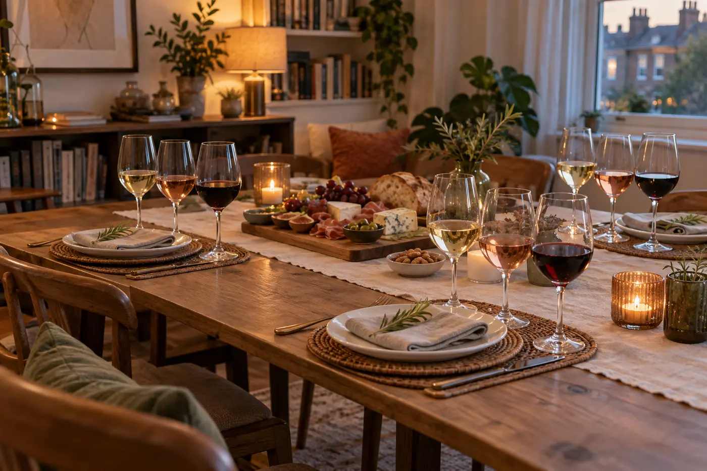

At home or at your chosen venue
Private Tastings
Your home, a venue you love and a line-up created for your group. From birthdays and celebrations to an evening with friends, each tasting gives everyone space to get involved, explore the wines and decide what they genuinely enjoy. Complete beginners and experienced wine lovers are equally welcome.
